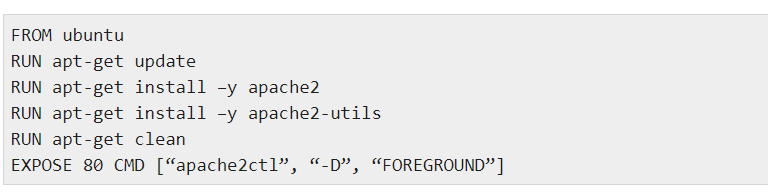
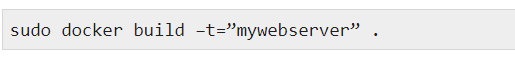
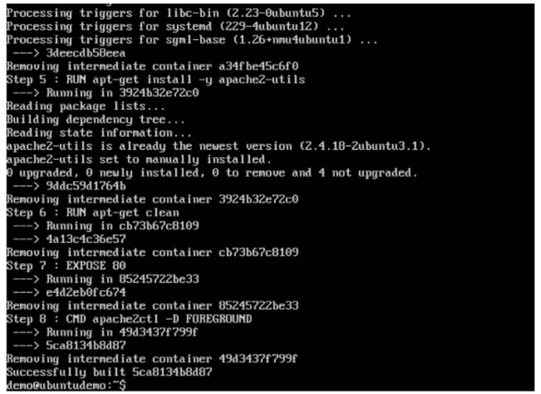

Introduction to Docker
In the present world, Docker is an important term
How we can build a web server image which can be used to build containers.
In our example, we are going to use the Apache Web Server on Ubuntu to build our image. Let’s follow the steps given below, to build our web server Docker file.
Step 1 − The first step is to build our Docker File. Let’s use vim and create a Docker File with the following information.
We are first creating our image to be from the Ubuntu base image.
Next, we are going to use the RUN command to update all the packages on the Ubuntu system.
Next, we use the RUN command to install apache2 on our image.
Next, we use the RUN command to install the necessary utility apache2 packages on our image.
Next, we use the RUN command to clean any unnecessary files from the system.
The EXPOSE command is used to expose port 80 of Apache in the container to the Docker host.
Finally, the CMD command is used to run apache2 in the background.
Step 2 − Run the Docker build command to build the Docker file. It can be done using the following command −
Step 3 − Now that the web server file has been built, it’s now time to create a container from the image. We can do this with the Docker run command.
